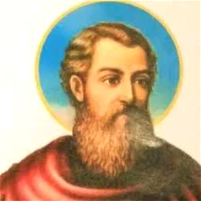
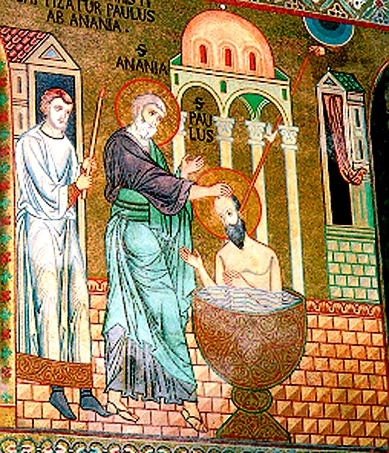

Biografia de Paulo, Apóstolo, São Paulo, Apóstolo (5-67) foi um apóstolo de Cristo, um dos maiores propagadores do cristianismo e autor de catorze epístolas do Novo Testamento. Antes de se converter ao Cristianismo era conhecido como Saulo e perseguia os discípulos de Jesus nos arredores de Jerusalém.
São Paulo, Apóstolo, também conhecido por Paulo de Tarso, nasceu em Tarso, na Cilícia (hoje uma região da Turquia), no ano 5 da Era Cristã. Tarso era um próspero centro mercantil e intelectual do mundo romano.
Filho de uma família judaica da tribo de Benjamim, que gozava dos privilégios da cidade romana, ao nascer, recebeu o nome de Saulo (do hebreu), que mais tarde alterou para Paulo (do latim), depois da conversão e do batismo.
Paulo passou os primeiros anos de vida em meio da comunidade judaica e frequentou a escola da sinagoga. Um antigo costume judeu era ensinar às crianças algum trabalho útil. Paulo tornou-se tecelão.
Ainda adolescente, foi enviado a Jerusalém, onde deveria familiarizar-se mais profundamente com a religião e a cultura hebraica. Em Jerusalém, estudou no templo de Salomão, reedificado e embelezado pelo rei Herodes Agripa.
Membro da seita ortodoxa dos fariseus, como seu pai, durante cinco anos foi educado como discípulo de Raban Gamaliel, rabino influente e de renome.
Além da Bíblia, Paulo estudou a “Lei Oral”, um conjunto de tradições que regulava todas as atividades da vida cotidiana. Paulo se preparava para ser um rabino na mais ortodoxa das seitas judaicas. No fim dos estudos, Paulo retornou para Tarso e alternou os trabalhos na sinagoga com a fabricação de tendas, junto com seu pai.
Nesse período, os discípulos de Jesus já eram mais de 5 mil. A maior parte dos judeus, inclusive Paulo, não acreditava, ainda, que aquele fosse o Messias. Seguidor fiel de sua formação judaica, passou a perseguir as primeiras comunidades cristãs.
Nessa época, ocorreram os grandes eventos do cristianismo: no ano 27 ocorreu o martírio de João Batista, com 33 anos Jesus foi crucificado, no ano 34 ocorreu o apedrejamento de Estevão, membro da comunidade cristã de Jerusalém.
A caminho de Damasco, Saulo teve a visão de uma luz incandescente e ouviu a voz de Jesus que lhe indaga sobre as perseguições. No mesmo instante ficou cego e durante três dias entregou-se às orações.
A mando de Jesus, Ananias vai a seu encontro, prepara seu batismo, põe a mão em sua cabeça e no mesmo instante Saulo recobra a visão. Impressionado com o ocorrido, é batizado com o nome de Paulo e converte-se ao cristianismo.

Para reconstruir seus pensamentos,, Paulo retirou-se para o deserto da Arábia, onde realizou pregações. Três anos após sua conversão, visitou Jerusalém, onde conheceu os apóstolos Pedro e Tiago.
A partir de então, Pedro realizou três expedições missionárias pregando o evangelho de Jesus Cristo, feito narrado no livro dos Atos dos Apóstolos. Na primeira expedição missionária, Paulo esteve na Salamina, Antioquia da Pisídia, Listra e Derbe.
No ano 48, participou do Concílio de Jerusalém, quando se opôs aos judeus cristãos e até ao próprio Pedro, que queriam impor a circuncisão e a observância da lei judaica aos gentis convertidos. Nessa época, Cláudio expulsou os judeus de Roma.
Entre 49 e 53, Paulo realizou sua segunda viagem missionária quando expandiu o cristianismo e criou Igrejas na Síria, Cilícia, Chipre, Macedônia e Atenas, indo se fixar em Corinto. Durante dezoito meses fundou uma comunidade cristã formada por pessoas da camada mais modesta da população.
Em 54, Paulo realizou sua terceira viagem missionária. Foi a Efeso e novamente a Corinto e daí para a Macedônia. Em 58, no seu retorno a Jerusalém, para onde levava o resultado de uma coleta para os pobres, foi preso e submetido a julgamento por um tribunal de César.
Alegando sua condição de cidadão romano ele foi levado para Roma, mas um naufrágio (em Malta) interrompeu a viagem. Chegando em Roma viveu em relativa liberdade.
Entre 50 e 62, Paulo escreveu suas epístolas, das quais catorze conseguiram sobreviver: Romanos, 1.ª e 2.ª Coríntios, Gálatas, Efésios, Filipenses, Colossenses, 1.ª e 2.ª Tessalonicenses, 1.ª e 2.ª Timóteo, Tito, Filemon e Hebreus.
Nas epístolas, São Paulo trata da doutrina, da ética cristã e da organização da Igreja. (Na Bíblia, as Epístolas seguem-se aos Evangelhos e aos Atos dos Apóstolos).